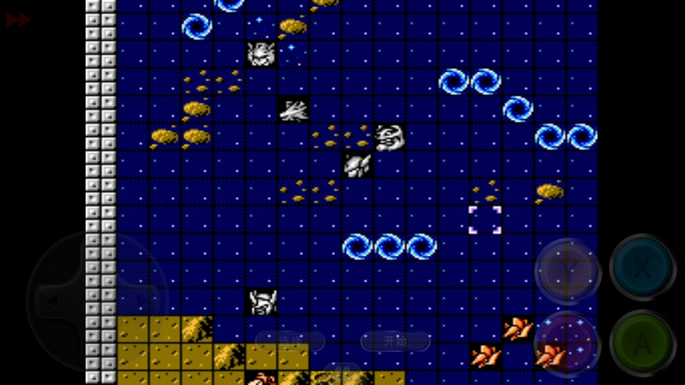
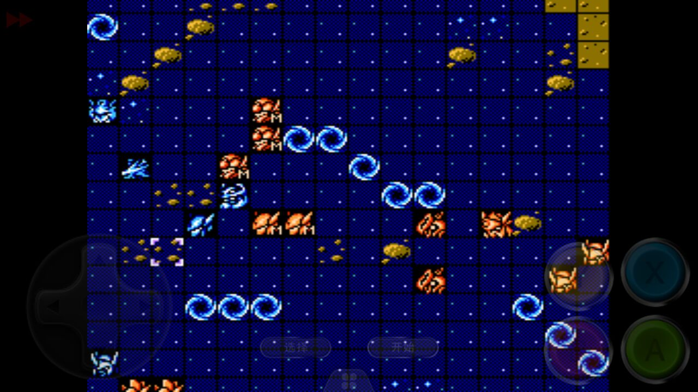
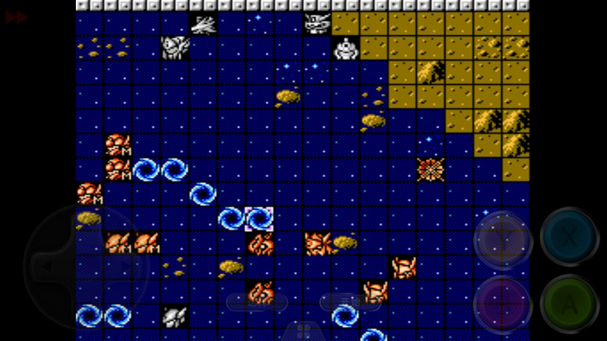
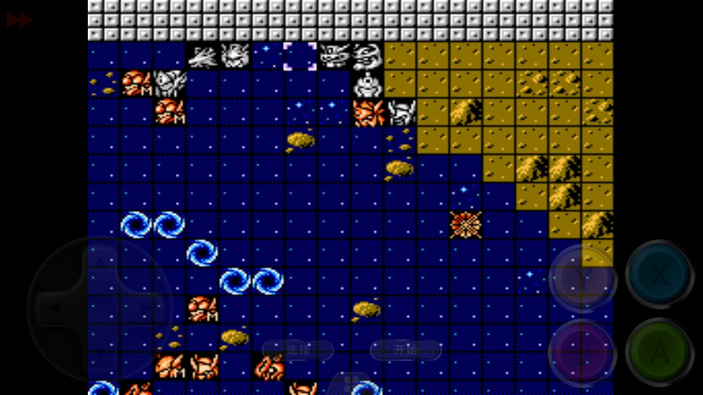

1、第一关开局主角机选择产生的节点。翼骑士优点速度快，能双击多数速度慢的敌军；胜利者优点攻击高，防御和血量略高于翼骑士，缺点是会被敌方速度高的双击！注意：选胜利者可能无法击落4次银风！！！
2、第五关魂之座隐藏是否完成。这里的影响比较大如果拿了第六关无法击落4次银风；外加第八关隐藏，第九关向介远程武器更新，只是远程射程＋1，对地攻击力增加几十！对后续影响不大
3、第六关和第七关是一个比较大的转折点，想要把老白老温同时击落是有一定的要求的，下面针对击落3次银风和4次银风前面7关系统讲诉一下！（主要是为了节约道具）
一、如果是击落3次银风，前面5关就没有多大的要求 可以全部都拿了，但是第6关结束需要给乔修击落两次到14级，给隆盛击落一次到13级，拉米亚到11级，其他人没有多少要求
二、如果是击落4次银风（其中拉米亚、隆盛、基拉需要各击落一次，剩下的一次可以选择给基拉到14级，也可以给乔修），c装甲给穆吃了（有谁能打出不吃一个道具的，请到阿牛处反应或者贴吧发新帖提一下），那么需要综合第七关同时击落老温和老白来升级满足：
莱8级（自身一个毅力，两个友情），其中一个友情给向介强攻输出，一个给母舰输出，因为他们攻击高，比莱自己热血输出高太多！
艾克赛琳11级，这里只是为了节约两个点子盾为了第七关同时击落老白和老温！！！母舰7级，拉托你9级！
最后这里需要注意了，有3个情况：
如果是拉米亚7级卡14以内经验击落第一次银风到13级，那么在打银风前需要给乔修到9级，隆盛到8级卡经验击落第二次银风到13级，向介到8级
如果是拉米亚9级，打银风前乔修到7级（如果用狂暴需要吃一个点子盾，用防守就不需要了），隆盛7级卡14以内经验击落第一次银风到13级，向介8级或者9级
如果是向介7级，隆盛7级，拉米亚7级，翼骑士9级，那么就吃给隆盛吃一个点子盾吃第二次银风，给向介吃一个点子盾，拉米亚吃第一次银风
总之一句话，输出不够道具来凑，但是道具用多了的话就没有击落三次收益大了！打法参照安藤的视频https://v.youku.com/v_show/id_XMzgwMzMxOTUyNA==.html?x&sharefrom=android&sharekey=900f6052345538774bf7be214db256a25
这里值得一提的就是seed路线和og路线前面7关都可以这样玩，因为seed路线收樱花的话19关结束泽奥拉和阿拉德隐藏机体就只能用17，18，19三关！不收樱花的话就是少了第七关的泽奥拉的隐藏，有拉托尼有干扰，所以都可以选择拿道具！
4、第九关要同时击落魂之座和阿斯兰需要的等级就是向介16级出直击，乔修和基拉14级，隆盛15级出直击，其他人看着升级吧，打法主要是引导敌方魂之座和她身边的原生古铁走位，把魂之座拉出来围着打，如果输出不够，就让向介过去在打一次输出，围着魂之座哪里自己调整一下位置让魂之座右移动两个让最后向介可以打到就好！
5、第15关，这里影响也比较大，因为16关有分支一条是seed路线，一条是og路线，所以从这开始就要根据路线着重升级主要人物！打这关有一个非常重要的人物就是拉托尼，根据她的等级是否是23级（干扰）会产生很大的影响（主要是等级相差较大）
如果拉托尼到达23级，那么这关相对来说就比较简单了，击落boss的补给主要给拉托尼放干扰就好，可以在最后刷很多次艾奇德娜获得大量经验！
如果拉托你没有到达23级，那么需要注意一个点把老温和艾奇德娜一次性全杀了（其中击落艾奇德娜补给给隆盛，然后再动一次隆盛即可）
这里还讲诉一下seed路线拉托尼飞升问题
一、拉托尼15级的话，那么可在17关第一次击落阿齐波尔德后，一次性击落阿齐波尔德和4个量产型救世主飞42级；可在18关开场随意击落11架敌机飞48级，18关第二阶段第三阶段飞升，也可以在19关飞都随意
二、拉托尼23级的话，这里可以18关第三阶段飞，但是飞的等级不高而且划算 浪费太多经验，那么只可能在19关第二阶段一次性击落三小强外加6个28级小兵到48级，小兵可以换成其他26 27的也可以保证拉托尼在42级到48级之间就可以了
6、seed路线剩下的17到22关，只有一点要注意：收樱花和不收樱花！收樱花，拉托尼、阿拉德和泽奥拉三人在19话结束离队
一、收樱花主要就是从20关开始，因为没有拉托尼的干扰，所以导致20关难度大幅度上升，如果这关只是追求过关的不难，可以秒掉娜塔尔，那么娜塔尔小队其他人员会全部撤离。如果是为了完成克队隐藏后，再全歼娜塔尔小队，那么这一关的难度可谓噩梦，我还没打过所以这里目前没有好办法0.0！剩下的3关都不难
二、不收樱花的话 20之后相对简单
7、og路线剩下的17到22关，前面所说的15关有23级拉托尼对18关影响比较大，等级高的话相对来说完成艾克赛琳和百何愁隐藏，外加正树飞升就简单一些，而等级低的话相对来说难一些但是也可以完成！因为击落老白只需要4个有直击的人保留直击热血或者直击强攻，然后母舰补给一发即可击落老白很轻松，难点就在完成艾克赛琳隐藏和飞升，完成艾克赛琳隐藏轻松不用太多精神那么飞升就简单，完成艾克赛琳隐藏用的精神多那么相对飞升就难
下面给出轻松完成艾克赛琳隐藏图文攻略
第一回合翼骑士用守护，其他人站位如下图



